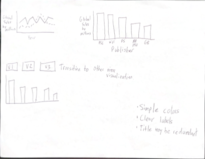
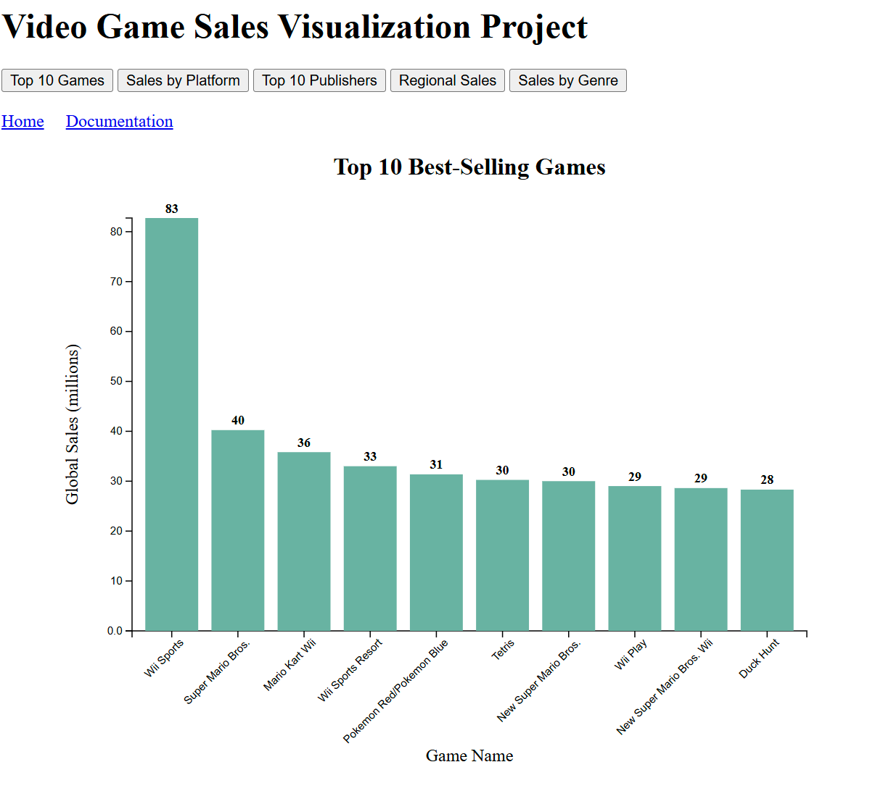
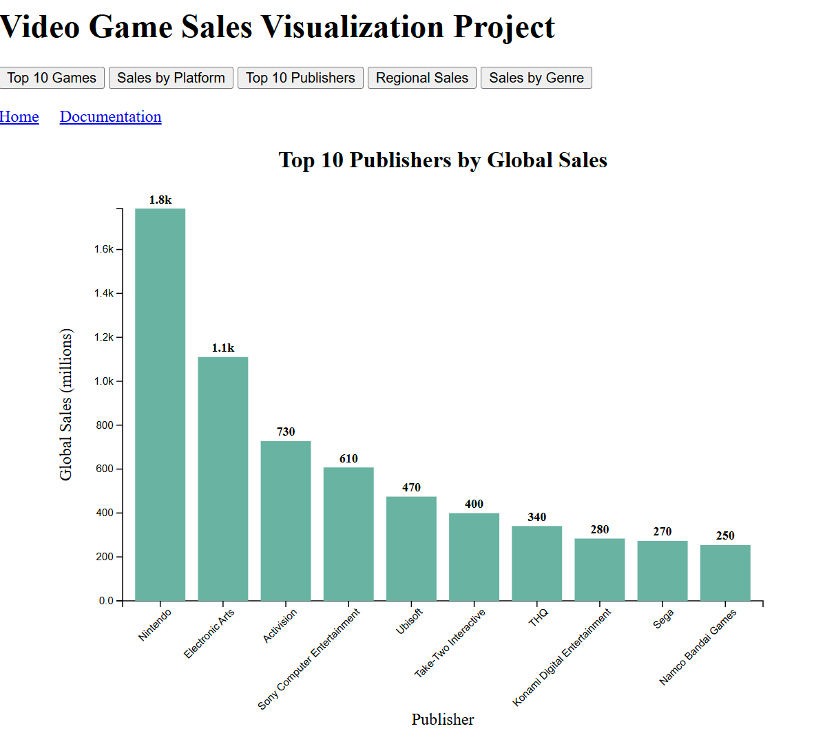
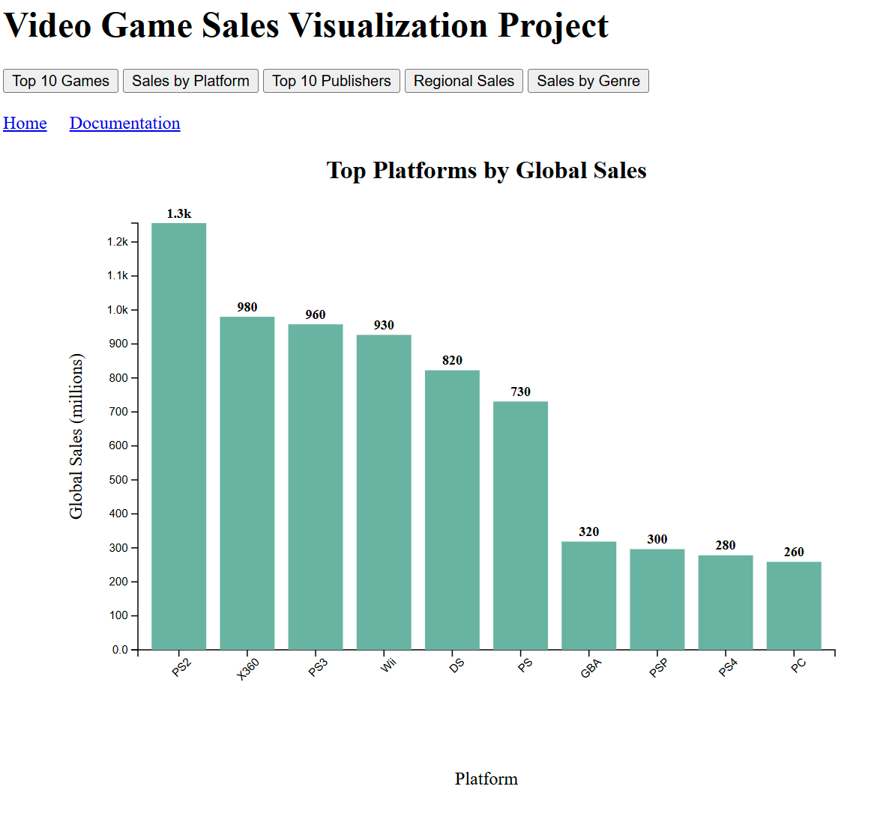
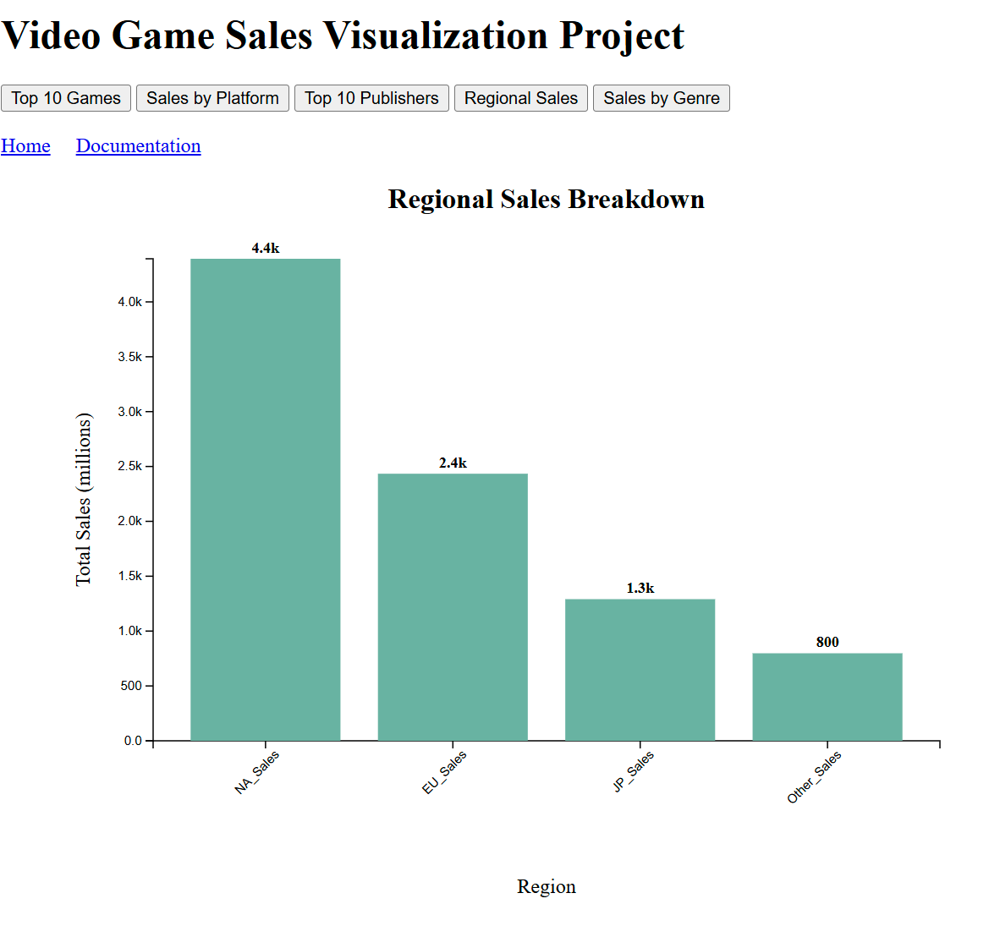
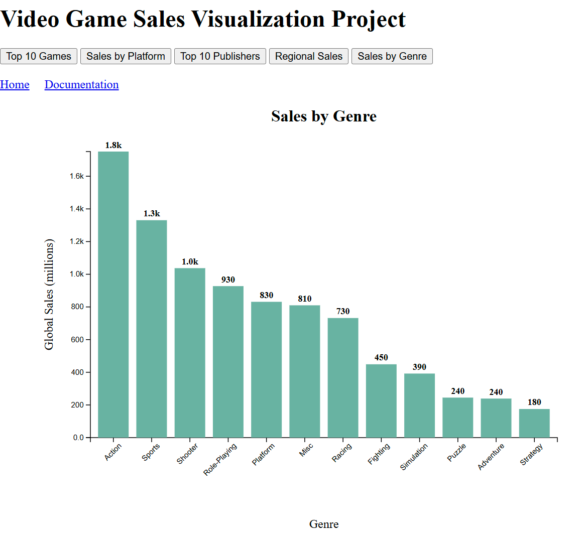

When I first saw the video sales spreadsheet, I knew that I was going to use bar charts for comparing categories, such as genres, publishers, and game names. Given that the focus of this visualization is to compare the heights of the categories, I wanted to keep the visualization simple with no varying colors. Also, I thought it would be cool to add animations since this project is going to be simple.
I originally was going to use a line chart for showcasing the global sales over time by publisher. The more I started to develop this visualization, the more I realized it was completely out of my skill set. I ultimately decided to keep the project simple and use five bar charts. Also, I had doubts about whether I should add a title to the visualization since I thought the buttons themselves were sufficient to explain its purpose. Ultimately, I decided to add the title to the graph so viewers can easily differentiate the graphs quickly.
I kept the colors incredibly simple by using one color for all variables. Given that there are more than three variables for every variable, I decided not to overwhelm the viewers with colors. I wanted the viewers to focus on the height of the bars instead of the colors, which some may consider a detriment to the visualization. However, I feel that the trade-off is necessary to showcase the information with as little distraction as possible.
Given that I have multiple buttons that update the visualization, I needed to dynamically update the x and y axes so switching views is seamless. I wanted to ensure that the viewer could read the x-axis labels, so I rotated the labels slightly since the default setting would make long-named labels bleed into the other labels. Also, I wanted the numbers to be short and easy to understand, so I formatted the numbers to 1.5k instead of 1,500 for easier viewing and labeled the bars with bold values.
Margin sizes are designed to ensure that the labels fit into the visualization. Previous sizes cut off the beginning of longer-named categories, so finding the correct margins was important. Also, I did not want to overwhelm the viewers with a bunch of categories, so I kept things simple by having a maximum number of categories depending on the objective. Finally, I wanted the buttons to clearly define what will change if the button is clicked to promote a satisfactory user experience.
I wanted to discover the following: the top ten best-selling video games, top platforms, top ten publishers, regional sales, and sales by genre. While people can easily Google this information, having a visualization demonstrates the difference between the largest categories and others.
For the top ten selling games, I wanted to see how Wii Sports compared to the rest of the top ten. Then I noticed that all of the titles were Nintendo games, so I checked the sales by platform and the top ten publishers. I did notice that Nintendo platforms were not in the top three platforms but were the number one publisher based on global sales. Then I remembered how the PS2 and Xbox 360 were extremely popular consoles at the time and understood that there wasn’t a discrepancy at all.
  After that, I wanted to see the ratio of NA_Sales to other categories since I knew that NA contributed to most of the sales, and I examined sales by genre since I assumed that shooter games would be number one. I found it interesting that NA_Sales made up over 50% of all sales, and shooter games were actually number three, not number one (action games take the top spot).
 Overall, the visualizations were chosen to confirm whether my assumptions were correct or not. While I appear to be mostly correct, I did not understand the complete context of total video game sales. Thankfully, this project was great in clarifying the truth, and I ended up being pleasantly surprised.